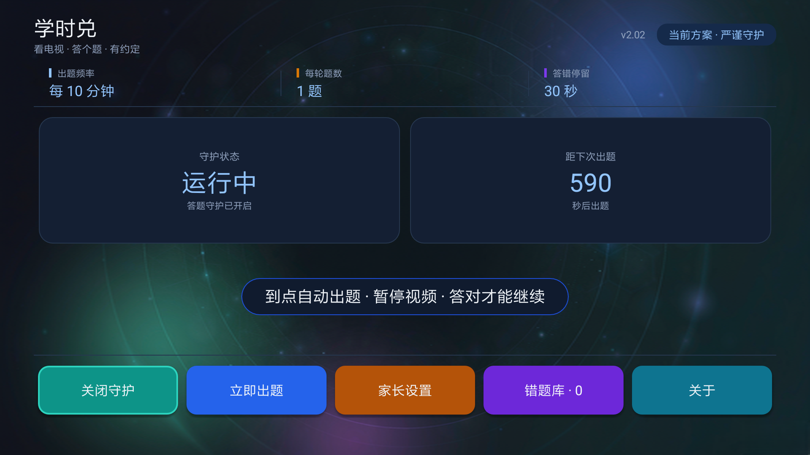
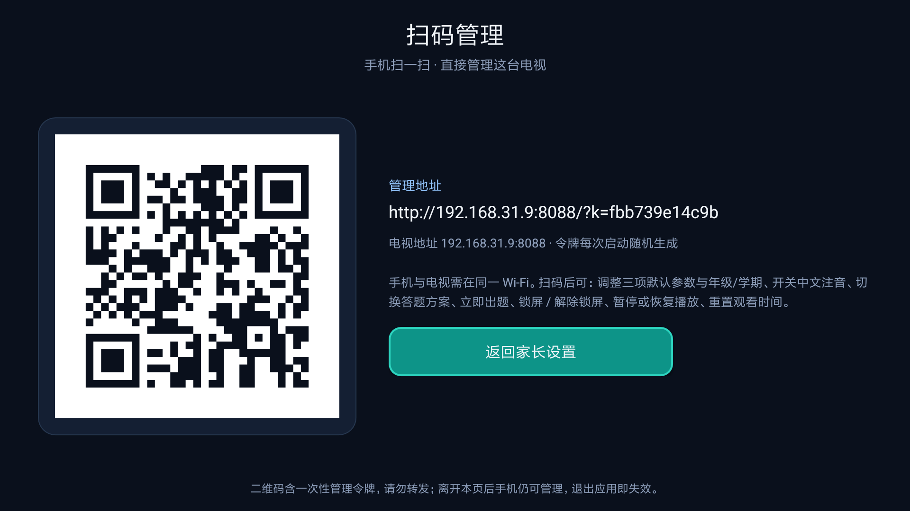
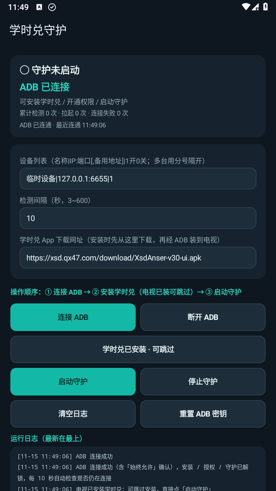

01
安心看
守护在后台计时，临近出题先在屏幕顶部轻轻提醒一句「还有 10 分钟就要答题啦 · 先准备一下」，不打断正在看的内容。
提醒可感知 · 不突兀
把「再看一会儿」变成一次小小的认真。到点自动出题、暂停画面，答对才能继续观看；家长用手机扫个码，就能管好这块屏幕。

孩子看电视，最难的不是「不让看」，而是「说好了看多久」。学时兑把这个约定交给程序执行：时间一到，画面上出现一道和课本同步的小题；答对了，继续看；答错了，安静地再来一次。
它适配小米、TCL、创维、索尼等主流智能电视，也能装在电视盒子、投影仪上，不占用手机，也不需要孩子的账号。所有参数由家长设定，题库随安装包一起放进设备，客厅里断网也能照常出题。
默认每 10 分钟一轮、每轮 1 题；家长可随时调整频率、题数与时长。
守护在后台计时，临近出题先在屏幕顶部轻轻提醒一句「还有 10 分钟就要答题啦 · 先准备一下」，不打断正在看的内容。
时间一到，全屏答题浮层覆盖画面，视频暂停。用遥控器方向键或数字键 1–4 作答：第一次答错弹出解析卡、选项重排再想一想；第二次再答错就记入错题库，不弹卡、立即自动换一题。两种守护方案一致。
「自主可控」方案里，每答对 1 题可获得 1 分钟观看时长；「严谨守护」方案按固定频率出题。两种方案、起始时长、奖励时长都由家长决定。
从低年级认字到家长远程管理，细节都在设置里，界面仍然一眼看懂。
出题频率、每轮题数、答错停留时长都可调；首页实时显示「守护运行中」与距下次出题的秒数。
默认 10 分钟 / 1 题10800 道选择题覆盖 9 个年级、216 个知识点、16 大类，可按年级、学期、学科与知识点范围挑题，随包内置、出题不联网。
简单等级 · 已内置题干与选项的每个汉字上方标出带声调拼音，低年级孩子不识字也能读题；家长设置里一键开关，默认关闭。
含多音词校正家长设置 → 题库信息，输入官网下载码即可把新题导入本机；也可手机扫二维码打开题库下载页。除四级难度外，任意学科、某一单元或某个知识点都能联系作者按需定制，什么题目都能做。
18 套现成 · 其余可定制第一次答错弹出解析卡，四个选项重新排列再答一遍；同一题第二次再答错就不再弹卡，直接记入错题库并立即自动换题。严谨守护与自主可控两种方案都按这个规则执行。
答错 2 次 · 入库换题「严谨守护」按固定节奏出题，「自主可控」用答题兑换观看时长；切换方案后参数分区随之生效。
严谨守护 / 自主可控首次进入家长设置时设定 4–8 位数字密码，之后所有参数、题库范围、扫码页都受它保护。
PIN 保护电视上打开扫码页，手机同 Wi-Fi 扫一下：改参数、切年级学期、开注音、立即出题、锁屏解锁、暂停恢复、重置观看时间。
一次性随机令牌不注册账号、不上传作答记录；出题与题库都在设备本地完成，只有下载新题库、手机扫码管理与在线收款码需要网络。
数据留在家里下面都是真实设备截图，不是设计稿。点标签切换查看。
守护状态、出题频率、每轮题数、答错停留、距下次出题的秒数都摆在首页；底部五个大按钮用遥控器左右键就能选中。
家长设置里打开「扫码管理」，电视会显示一个二维码和局域网地址。手机连同一个 Wi-Fi 扫码，即可打开控制台：参数、年级学期、注音开关、立即出题、锁屏解锁、暂停或恢复播放、重置观看时间，都能在手机上完成。

「学时兑守护」是配套的手机端小工具（v2.14.3，约 113 KB）。通过家里 Wi-Fi 的 ADB 连上电视 / 盒子，自动下载安装学时兑、补齐权限，并定时检查守护是否还在。
名称|IP:端口|开关、检测间隔与学时兑下载网址即可。
盒子上开启 USB 调试 / 网络 ADB 调试，App 里填好 IP:5555 后点「连接 ADB」；电视弹窗勾选「始终允许」，日志出现「ADB 连接成功」即解锁后续操作。
点「安装学时兑到电视」，App 下载官网 APK 后推送安装，并自动放行悬浮窗、加入电池白名单、开通自启与防休眠；电视已装学时兑可跳过这一步。
点「启动守护」后每约 10 秒检测一次连通与判活：学时兑被系统杀掉会自动拉起，被卸载或被管家清掉会自动下载安装包装回并唤醒。点「断开 ADB」可彻底停止，让出盒子连接给电脑。
适配小米、TCL、创维、索尼等主流智能电视，也能装在电视盒子、投影仪与安卓手机上；已在小米盒子 4（Android 6.0.1）实机跑通。
点页面上的「下载 v2.03」，得到 XsdAnser-v30-ui.apk（2,717,245 字节）。这是自签名应用，浏览器提示「未知来源」时选择保留即可。
用右边任意一种方式把 APK 装进设备：U 盘最省事，手机投送不用插线，ADB 适合会命令行的人。也可以装手机端「学时兑守护」，用 Wi-Fi ADB 自动下载、安装并开好权限（右侧第 4 种方式）。小米、TCL、创维、索尼等品牌的菜单名称略有差别，找「未知来源安装」「远程安装」即可。
① 允许「显示悬浮窗」；② 等几秒让约 5 MB 题库在后台复制完成；③ 进家长设置设定 4–8 位家长密码。
回首页点「立即出题」试一轮，确认浮层正常；再到家长设置 → 扫码管理，用手机扫码打开控制台。
系统默认不授予「显示悬浮窗」权限，不开启就不会弹出答题浮层，也不会有远程锁屏。路径：设置 → 应用 → 学时兑 → 权限 → 显示悬浮窗 → 允许。首次点「立即出题」若提示「题库暂不可用」，等题库复制完再点一次即可。
XsdAnser-v30-ui.apk 拷进 U 盘根目录。XsdAnser-v30-ui.apk 到当前目录。adb connect 电视IP:5555
adb install -r -d XsdAnser-v30-ui.apk
adb shell appops set com.xsdanser.tv SYSTEM_ALERT_WINDOW allowinstall -r -d 仅适用于同包名覆盖（保留家长设置）。完整下载命令、权限清单和给豆包 / WorkBuddy 的安装提示词见下方 ADB 安装板块。XsdGuardPhone.apk（守护 App 专区，约 113 KB），并让手机与盒子连同一个 Wi-Fi。小米电视|192.168.31.9:5555|1 改成自家 IP）、检测间隔（默认 10 秒）和学时兑下载网址（默认官网直链）。官网下载 → 连上盒子 → 安装 → 开权限 → 验收。把右边的提示词发给豆包或 WorkBuddy，它会带你一步步做完并核对结果。
先在「设置 → 关于 / 关于本机」里连点「版本号 / 内部版本号 / 产品型号」7 次开启开发者选项；进入开发者选项后打开 USB 调试，要走无线再把「网络调试 / ADB over network」打开。下面是各品牌的入口差异：
adb connect 电视IP:5555。adb devices 识别。adb pair IP:端口 后输入 6 位码再 connect。第一次连接电视会弹「允许 USB 调试 / 网络调试」，**点确定**，否则后面一直是 unauthorized。
设置 → 关于本机 → 连点「版本号」7 次 → 返回「开发者选项」→ 打开 USB 调试 / 网络 ADB 调试；再到「网络」里记下盒子的局域网 IP。
在 https://xsd.qx47.com/ 点「下载 v2.03」，或用命令行下载（约 2.6 MB）：
# Windows PowerShell
Invoke-WebRequest -Uri "https://xsd.qx47.com/download/XsdAnser-v30-ui.apk" -OutFile "XsdAnser-v30-ui.apk"
# macOS / Linux
curl -L -o XsdAnser-v30-ui.apk https://xsd.qx47.com/download/XsdAnser-v30-ui.apk电脑与盒子连同一个 Wi-Fi；connect 不要带 -s，并和后续 adb 操作放在同一条命令里执行。
adb connect 【电视IP】:5555
adb devices
adb install -r -d XsdAnser-v30-ui.apk「显示悬浮窗」是答题浮层与远程锁屏的前提，装完必须开；然后启动 App，在首页点「立即出题」确认浮层出现。
adb shell appops set com.xsdanser.tv SYSTEM_ALERT_WINDOW allow
adb shell appops get com.xsdanser.tv SYSTEM_ALERT_WINDOW
adb shell pm path com.xsdanser.tv
adb shell monkey -p com.xsdanser.tv -c android.intent.category.LAUNCHER 1① 5555 才是 ADB 端口，小米盒子的 6095 是「小米电视助手」；② 显示 offline 时依次执行 adb kill-server → adb start-server → 重新 connect；③ 首次启动会在后台复制约 5 MB 题库，第一次点「立即出题」若提示「题库暂不可用」，等几秒再点一次；④ 守护服务未导出，别用 am startservice 触发出题，要在首页点按钮。
SYSTEM_ALERT_WINDOW答题浮层、顶部提醒、家长远程锁屏全靠它；不给就不出题appops set com.xsdanser.tv SYSTEM_ALERT_WINDOW allow，或 设置 → 应用 → 学时兑 → 显示悬浮窗adb install 通常不需要手动开勾选「始终允许」守护 App 靠网络 ADB 装包、授权、判活；首次不勾「始终允许」会反复弹窗，App 会循环等待生效设置 → 关于 → 连点版本号 7 次 → 开发者选项 → USB / 网络 ADB 调试；首次弹窗勾选「始终允许」再点允许悬浮窗 / 电池白名单 / 自启 / 防休眠安装后与「启动守护」时自动检测补齐，避免答题浮层被拦、服务被系统回收或重装后权限丢失无需手动：App 内部执行 appops set com.xsdanser.tv SYSTEM_ALERT_WINDOW allow、dumpsys deviceidle whitelist +com.xsdanser.tv 等并复核POST_NOTIFICATIONSAndroid 13+ 显示守护状态通知与每轮连通检测结果系统弹窗允许即可；低版本系统没有该权限，App 会自动跳过adb disconnect 电视IP:5555；电脑要用时先在 App 点「断开 ADB」① 在 App 里设置 4–8 位家长密码；② 家长设置 → 扫码管理，用同一 Wi-Fi 下的手机扫码打开控制台；③ 想免电脑长期看护，再装手机端「学时兑守护」。
适配小米、TCL、创维、索尼等主流智能电视，也能装在电视盒子、投影仪与安卓手机 / 平板上，系统需 Android 5.0 及以上，用原装遥控器方向键 / 确定键（或触屏）即可作答。已在小米盒子 4（Android 6.0.1，1920×1080）上完整验证答题流程，也适配 Android TV 桌面横幅；不同品牌只是「未知来源安装」的入口名称略有差别。
官网「题库下载」页按教材版本、年级、学期、学科、等级列出全部题库和下载码。当前已有的 18 套都是「简单」等级，已随 App 内置，下载码用于把同一套题同步到第二台电视、盒子或投影仪。目录里没有的题都可以联系作者定制，完成后会拿到专属下载码；在「家长设置 → 题库信息 → 新增题库」输入下载码，点「下载并导入」即可，重复题会自动跳过。
没有固定菜单，什么题目都可以定制。除了简单 / 中等 / 偏难 / 难四个难度等级，还可以指定：语数英之外的任意学科（科学、物理、化学、生物、历史、地理等）、某一册的某一单元或章节、孩子总错的某个知识点、老师划的复习范围、题量与是否配文字解析，甚至课本页码、错题照片或家长自己编的题。把需求发给作者，确认后出题并给专属下载码；成品按 App 的四选一选择题格式整理，方便遥控器作答。定制语数英之外的学科时，导入后记得在「家长设置 → 学科配比」把「其它」从默认的 0 调大，题目才会被抽到；「知识点范围」里同样有「其它」。详见「按需定制」。
九成是「显示悬浮窗」权限没给：到系统设置里为「学时兑」打开该权限，守护状态会从「已停止」变成「运行中」。另一种情况是首次启动题库还在后台复制，稍等几秒再点一次即可。
能。简单等级题库随安装包内置在设备里，出题、错题、注音都是本地完成。需要联网的只有三件事：用下载码下载新题库、手机扫码管理（手机与电视同一 Wi-Fi）、打赏页的在线收款码（离线时显示包内兜底图）。
家长设置由 4–8 位数字密码保护；扫码管理页也在密码之后，且二维码里的一次性令牌每次打开都会刷新、退出应用即失效。请不要把二维码截图转发给他人。
默认每 10 分钟出题、每轮 1 题、每题可得 1 分钟，答错停留 30 秒，中文注音默认关闭。这些都能在家长设置或手机控制台里调整；后续同包名版本覆盖安装时会保留家长自定义的值（跨包名升级不保留，见上一条）。
确认手机与电视在同一个 Wi-Fi（不要连访客网络）；二维码令牌每次打开扫码页都会重新生成，请用电视上当前显示的码重新扫；离开应用后旧地址会失效。
可以。把「学时兑守护」v2.14.3（约 113 KB）装在安卓手机 / 平板上，填好盒子的 IP 与端口，点「连接 ADB」并在电视上勾选「始终允许」；之后点「安装学时兑到电视」会自动从官网下载并推送安装，安装后与「启动守护」时自动补齐悬浮窗、电池白名单、自启、防休眠，每约 10 秒检查一次，学时兑被杀会自动拉起；发现被卸载会自动下载安装包装回并唤醒。电视已装学时兑时会提示「可跳过安装」。注意多数盒子同一时间只允许一条 ADB 连接，用 App 前请先断开电脑上的 adb。
可以。上面「ADB 安装」板块里准备了给豆包和 WorkBuddy 的安装提示词，复制过去即可；它会从 官网 下载安装包、连上盒子、安装、授予「显示悬浮窗」权限并逐项验收，涉及卸载等不可逆操作会先征求你的确认。
看电视 · 答个题 · 有约定
自签名应用，安装时系统提示「未知来源」属正常现象；适配小米、TCL、创维、索尼等主流智能电视，也能装在电视盒子与投影仪上。需要更多题目请到「题库下载」页按下载码导入，也可以按需定制任意学科、单元或知识点的专属题库。本工具是家庭学习约定辅助工具，不替代陪伴与沟通，请合理安排孩子的用眼与休息时间。